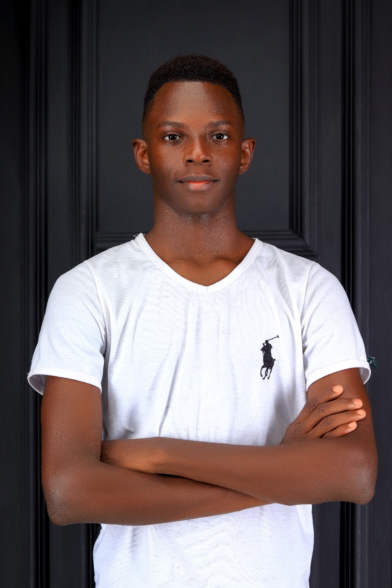

Welcome to My Portfolio
I'm Gideon Nzaka

A dedicated upcoming web developer passionate about crafting beautiful, functional websites.
When I'm not coding, I'm dreaming of coding. I am also persuing B.Sc. Microbiology combining biology with technology at Jomo Kenyetta University of Agriculture and technology.